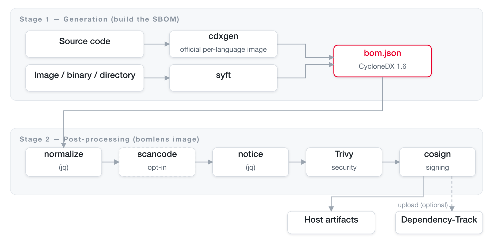
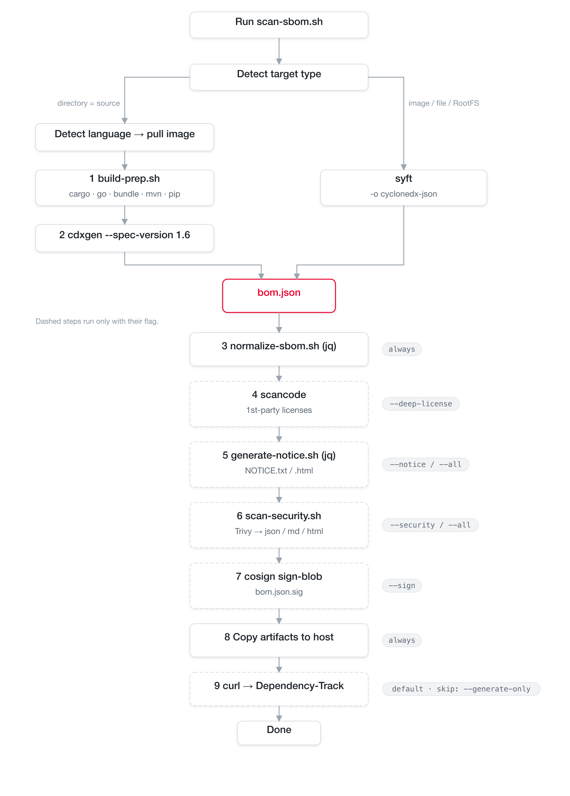
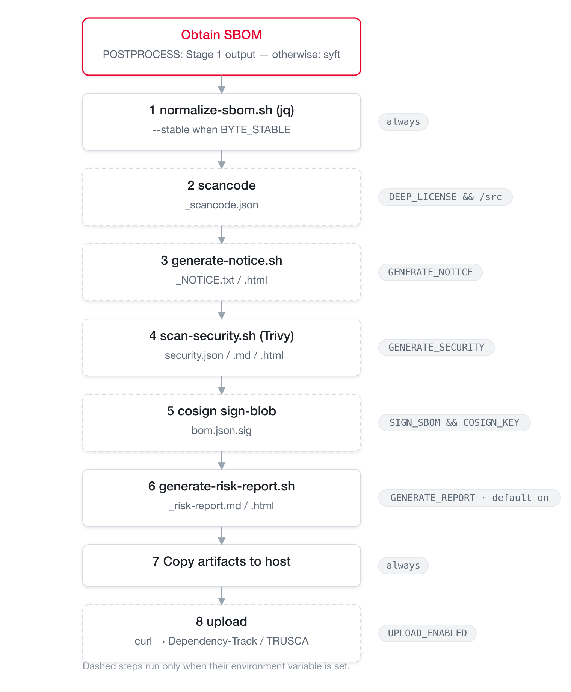

Architecture¶
This document describes the overall system structure of BomLens and explains which tool runs at which step of the scan pipeline, and in what order.
For the per-input tool flow — source code (with the ScanCode and SCANOSS options), firmware, a received SBOM, and an AI model — see Pipeline by input type.
This document reflects the 2-stage architecture as currently implemented. The Stage 1 routing in the source code (detect the language, then run the official cdxgen language image) is implemented and working in
scripts/scan-sbom.sh.
At a glance¶
BomLens is a 2-stage pipeline in which two kinds of Docker images work together.
- Stage 1 — Generation: for source code, the official per-language cdxgen images generate the SBOM (CycloneDX 1.6); for container images, binaries, and directories, syft does.
- Stage 2 — Post-processing: the lightweight
bomlensimage takes the SBOM and runs normalization, optional deep license detection, notice generation, the security report, signing, and upload in order.

The single entry point for orchestration is scripts/scan-sbom.sh (scan-sbom.bat on Windows); this is the only script users invoke.
Why two stages¶
Previously, every language runtime plus every analysis tool lived in a single huge image. The redesigned pipeline splits the responsibilities in two.
| Stage 1 image | Stage 2 image (bomlens) |
|
|---|---|---|
| Role | Generates the SBOM from source | SBOM post-processing (normalization, notice, security, signing, upload) plus syft scans |
| Contents | Official per-language cdxgen images (java, python, node, ...) | No language toolchain — lightweight debian:12-slim |
| Acquisition | Pulled on demand after detecting the project language | Pulled once and reused |
| Benefit | cdxgen maintains up-to-date per-language toolchains | Small image; pinned tool versions ensure reproducibility |
For the five mainstream languages (java, python, node, dotnet, php), detection with the official cdxgen images is identical, and for go, ruby, and rust the toolchain preparation (
build-prep.sh) is markedly better. For the measurement data, see README "Why a Docker image?".
Tool inventory¶
The tools invoked by the pipeline and their version pinning status (supply chain hygiene).
| Tool | Version | Stage | Role | Enabled when |
|---|---|---|---|---|
| cdxgen | bundled in the language image | Stage 1 | Generates the SBOM from source code (--spec-version 1.6) |
MODE=SOURCE |
| build-prep.sh | — | Stage 1 | Dependency preparation right before cdxgen (cargo, go, bundle, mvn, pip) | MODE=SOURCE |
| syft | v1.51.0 |
Stage 1 | Scans images, binaries, and root filesystems | MODE=IMAGE/BINARY/ROOTFS |
jq (normalize-sbom.sh) |
— | Stage 2 | Normalizes and sorts the SBOM | Always |
| ScanCode Toolkit | 32.5.0 |
Stage 2 | Precise license detection on first-party source | --deep-license (opt-in build) |
| SCANOSS | 1.54.2 |
Stage 2 | Identify vendored open source in C/C++ source with no package manager | --identify-vendored |
jq (generate-notice.sh) |
— | Stage 2 | Generates the open source notice (NOTICE) | --notice / --all |
| Trivy | v0.74.0 |
Stage 2 | Vulnerability (CVE) security report | --security / --all |
| Cosign | v2.6.5 |
Stage 2 | Detached SBOM signature | --sign |
| curl | — | Stage 2 | Upload to Dependency-Track | Default (unless --generate-only) |
Versions are pinned as
ARGs indocker/Dockerfile. To keep the image lean, ScanCode is an opt-in build arg (--build-arg SBOM_DEEP_LICENSE=true). The SCANOSS client is included by default; build with--build-arg SBOM_SCANOSS=falseto drop it. Firmware unpacking/identification (unblob, cve-bin-tool) ships in the separate opt-inbomlens-firmwareimage, and AI-model SBOM generation (OWASP AIBOM Generator) inbomlens-aibom. For the per-input tool flow, see Pipeline by input type.
Full pipeline flow¶
The order in which tools are invoked, in one diagram. Dashed boxes are optional steps enabled by flags.

The sequence from the user's invocation through post-processing:
sequenceDiagram
autonumber
actor U as User
participant S as scan-sbom.sh
participant D as Docker
participant L as Stage 1 language image
participant P as bomlens (run-scan)
U->>S: scan-sbom.sh --project App --version 1.0 --all
S->>S: Parse arguments, detect target type
rect rgb(227,242,253)
note over S,L: Stage 1 — Generation
S->>D: (source) docker run the language image
D->>L: build-prep.sh → cdxgen
L-->>S: bom.json
end
rect rgb(241,248,233)
note over S,P: Stage 2 — Post-processing
S->>D: bomlens docker run (MODE=POSTPROCESS)
D->>P: run-scan (entrypoint)
P->>P: normalize → scancode → notice → Trivy → cosign
P->>P: Copy artifacts to host
P-->>U: (optional) upload to Dependency-Track
endStage 1 — SBOM generation¶
The generation tool depends on the target type.
Source code (MODE=SOURCE) — cdxgen language image¶
scan-sbom.sh detects the project language with detect_lang(), picks the matching official cdxgen language image with img_for_lang(), pulls it, and runs build-prep.sh inside that image (scripts/scan-sbom.sh:138-208). The lightweight post-processing image has no language toolchain, so generation is handled entirely by the language image.
The per-language cdxgen image mapping is as follows (scan-sbom.sh:158-177; the tag is pinned via CDXGEN_TAG).
| Detected language | Image |
|---|---|
| rust | cdxgen-debian-rust |
| go | cdxgen-debian-golang124 |
| ruby | cdxgen-debian-ruby34 |
| java | cdxgen-temurin-java21 |
| python | cdxgen-python312 |
| node | cdxgen-node20 |
| php | cdxgen-debian-php84 |
| dotnet | cdxgen-debian-dotnet9 |
| android | self-built bomlens-android-sdk<API> (compileSdk extracted automatically) |
| mixed / unknown | cdxgen all-in-one (CDXGEN_ALLINONE) |
Two steps run inside the image:
build-prep.sh(docker/lib/build-prep.sh) — dependency preparation right before cdxgen. It creates lockfiles for ecosystems cdxgen cannot resolve on its own (notably Rust and Go), exposing transitive dependencies. POSIXsh, best-effort (it never fails the scan).
| Ecosystem | Action | Notes |
|---|---|---|
| Rust | cargo generate-lockfile |
cdxgen does not run cargo automatically — required |
| Go | go mod download (-mod=mod) |
Resolves the module graph |
| Ruby | bundle lock / install |
Only when no lockfile exists |
| Maven | mvn dependency:resolve |
Lightweight safety net |
| Python | pip install -r requirements.txt |
Exposes transitive dependencies when no lockfile exists |
- Run cdxgen —
build-prep.shauto-detects the cdxgen binary path, which differs per image, and runscdxgen -r --spec-version 1.6 -o bom.json(build-prep.sh:60-73). The generated SBOM is then handed to the Stage 2 (MODE=POSTPROCESS) post-processing image.
Image / binary / directory — syft¶
syft, included in the bomlens image, generates the SBOM directly. (docker/entrypoint.sh)
| MODE | Input | syft invocation |
|---|---|---|
IMAGE |
Docker image | syft <image> -o cyclonedx-json (requires the docker.sock mount) |
BINARY |
Single file | syft file:<path> -o cyclonedx-json (falls back to a minimal SBOM on failure) |
ROOTFS |
Directory | syft dir:<path> -o cyclonedx-json |
Stage 2 — post-processing pipeline¶
The bomlens image's entry point run-scan (docker/entrypoint.sh) takes the SBOM and runs the steps in a fixed order. Each step is enabled by an environment variable (equivalent to a CLI flag), and outputs accumulate in the ARTIFACTS list.

Step details:
| # | Step | Script / tool | Condition | Output |
|---|---|---|---|---|
| ① | Normalize | normalize-sbom.sh (jq) |
Always (deterministic mode with --byte-stable) |
Updates bom.json |
| ② | Deep license | scancode |
--deep-license and /src exists |
_scancode.json |
| ③ | Notice | generate-notice.sh (jq) |
--notice / --all |
_NOTICE.txt, _NOTICE.html |
| ④ | Security report | scan-security.sh (Trivy) |
--security / --all |
_security.{json,md,html} |
| ⑤ | Signing | cosign sign-blob |
--sign and COSIGN_KEY |
bom.json.sig |
| ⑥ | Risk report | generate-risk-report.sh |
Default (skip with --no-report) |
_risk-report.{md,html} (plus _conformance.* in ANALYZE mode) |
| ⑦ | Copy to host | cp |
Always | Copied to HOST_OUTPUT_DIR |
| ⑧ | Upload | curl |
Default (skipped with --generate-only) |
Upload to a Dependency-Track server or TRUSCA's native ingest (select with UPLOAD_TARGET) |
Why the order is fixed: normalization stabilizes the input for every later step, so it runs first; signing must target the final
bom.json, so it runs last. Each step is best-effort — failures are handled with|| trueor a warning and do not abort the whole scan (signing and upload excepted).
Branching by input type¶
scan-sbom.sh determines the mode automatically from --git/--analyze/--firmware and the --target value.
The checks run top to bottom; the first matching branch wins.
flowchart TD
D1{"--git URL<br/>or URL-like target?"} -->|yes| R1["clone → MODE=SOURCE"]
D1 -->|no| D2{"--target<br/>*.zip / *.tar.gz?"}
D2 -->|yes| R2["extract → MODE=SOURCE"]
D2 -->|no| D3{"--analyze sbom?"}
D3 -->|yes| R3["MODE=ANALYZE<br/>validate + convert to CDX"]
D3 -->|no| D4{"target omitted?"}
D4 -->|yes| R4["MODE=SOURCE<br/>current directory → cdxgen"]
D4 -->|no| D5{"existing file?"}
D5 -->|"yes · --firmware/extension"| R5["MODE=FIRMWARE<br/>opt-in firmware image"]
D5 -->|"yes · otherwise"| R6["MODE=BINARY → syft"]
D5 -->|no| D6{"existing directory?"}
D6 -->|yes| R7["MODE=ROOTFS → syft"]
D6 -->|no| R8["MODE=IMAGE → syft"]Independently of the branching above,
--uistartsMODE=UI(the web serverserver.py) and runs subsequent scans through the form or file upload.
| Mode | Trigger | Generation tool | Notes |
|---|---|---|---|
SOURCE |
No target, --git <url>, or --target *.zip/*.tar.gz |
cdxgen | Language detection selects the per-language image. Git targets are cloned; archives are extracted and treated as source. (The web UI's SOURCE uses syft dir: inside the container) |
ANALYZE |
--analyze <sbom> (alias --sbom) |
— | Validates a supplier SBOM (CycloneDX/SPDX), converts it to CDX, and re-aggregates. Produces _conformance.* |
FIRMWARE |
--target <file> --firmware, or a firmware file extension |
unblob + syft + cve-bin-tool | Opt-in image bomlens-firmware. Details in the firmware analysis guide |
BINARY |
--target <file> |
syft | file: scheme |
ROOTFS |
--target <directory> |
syft | dir: scheme |
IMAGE |
--target <image name> |
syft | docker.sock mount |
AIBOM |
--model <owner/name> |
OWASP AIBOM Generator | Opt-in image bomlens-aibom. CycloneDX 1.7 ML-BOM from a HuggingFace model card; adds a G7 conformance check |
MODELFILE |
--model-file <path> |
identify-model-file.py (stdlib) |
Base image, offline. CycloneDX 1.7 ML-BOM read from a model file's own header (GGUF, safetensors, PyTorch, pickle, npz, npy, ONNX); adds the same G7 check |
DATASET |
--model <Figshare item> |
scan-figshare.py (stdlib) |
Base image. A published research dataset read from the public Figshare item endpoint (no account): licence, DOI, authors and a per-file MD5 digest become a CycloneDX 1.7 data component |
UI |
--ui |
— | Browser UI; runs every scan target type through the form or file upload |
Flag-to-step mapping¶
How CLI flags translate into environment variables and which steps they enable (scan-sbom.sh converts them and passes them to entrypoint.sh).
| Flag | Environment variable | Steps enabled |
|---|---|---|
| (default) | GENERATE_REPORT=true (plus notice and security) |
normalize + risk report + upload |
--no-report |
GENERATE_REPORT=false |
Does not force-enable the risk report, notice, or security steps |
--notice |
GENERATE_NOTICE=true |
③ notice |
--security |
GENERATE_SECURITY=true |
④ security report |
--all |
Both of the above | ③ + ④ |
--git <url> / --branch |
(cloned on the host) | SOURCE input collection |
--analyze <sbom> |
MODE=ANALYZE |
Supplier SBOM validation, conversion, and report |
--firmware |
MODE=FIRMWARE (firmware image) |
Unpack, then syft + cve-bin-tool |
--model <owner/name> |
MODE=AIBOM (aibom image) |
Generate an ML-BOM from a HuggingFace model, plus a G7 check |
--model-file <path> |
MODE=MODELFILE |
Read one model file's header into an ML-BOM, offline, plus a G7 check |
--model <Figshare item> |
MODE=DATASET |
Describe a published dataset from its Figshare item, no account needed |
--deep-license |
DEEP_LICENSE=true |
② scancode |
--byte-stable |
BYTE_STABLE=true |
① deterministic normalization (also the UI's Reproducible output toggle) |
--sign |
SIGN_SBOM=true (plus COSIGN_KEY/COSIGN_PASSWORD) |
⑤ signing |
--generate-only |
UPLOAD_ENABLED=false |
⑦ skips the upload |
--ui |
MODE=UI |
Web UI |
The risk report (
_risk-report.{md,html}) is generated by default in every mode (it aggregates licenses and vulnerabilities). To support it, the notice and security scans are turned on automatically alongside it; disable with--no-report.
For how to use each feature, see the notice and security report guide.
Artifacts¶
{P} is the project name, {V} the version (special characters are normalized to _).
| File | Generated when |
|---|---|
{Project}_{Version}_bom.json |
Always (CycloneDX 1.6; a 1.7 ML-BOM for AI models) |
{Project}_{Version}_NOTICE.txt / .html / .pdf |
--notice / --all / default risk report generation (PDF only in an SBOM_PDF build) |
{Project}_{Version}_security.json / .md / .html |
--security / --all / default risk report generation |
{Project}_{Version}_risk-report.md / .html |
Default (all modes) — skip with --no-report |
{Project}_{Version}_conformance.json / .md / .html |
--analyze (supplier SBOM validation) |
{Project}_{Version}_scancode.json |
--deep-license |
{Project}_{Version}_bom.json.sig |
--sign |
Extension points¶
Adding support for a new language¶
- Check whether an official cdxgen image exists for the language — if so, add it to the routing table.
- If cdxgen cannot resolve transitive dependencies automatically, add preparation logic to
docker/lib/build-prep.sh. - Add an example project under
examples/{language}/and a test case intests/cases/test-{language}.sh.
For the full procedure, see the package manager guide.
Adding a new post-processing step¶
Add a helper script under docker/lib/, call it from the shared pipeline section of entrypoint.sh (after normalization) behind an environment variable guard, and append its outputs to ARTIFACTS. Place it before the signing step so its outputs are covered by the signature.
Design principles¶
- Isolation — all analysis runs in Docker containers; the host environment stays untouched.
- Separation of concerns — generation (Stage 1) and post-processing (Stage 2) are split, keeping the post-processing image small.
- Reproducibility — tool versions are pinned via
ARG;--byte-stableproduces byte-identical output. - Standards compliance — conforms to the CycloneDX 1.6 specification.
- Robustness — post-processing steps are best-effort and do not abort the whole scan.
- Single interface — every language and mode is invoked through the one
scan-sbom.sh.
Division of roles (TRUSCA)¶
BomLens specializes in generation. Governance — company-wide project management, vulnerability triage, and license policy gates — is delegated to the sister project TRUSCA (formerly TrustedOSS Portal). Both tools share cdxgen and Trivy, so the artifacts (CycloneDX) are directly compatible.
flowchart TB
subgraph dev["Developer · single project"]
direction LR
A["Source / image / binary"] --> B["BomLens"]
B --> C["SBOM"]
B --> D["Notice"]
B --> E["Security report"]
end
subgraph org["Organization · central management"]
direction LR
F["TRUSCA"] --> G["Vulnerability triage"]
F --> H["License policy gate"]
F --> I["Project dashboard"]
end
C -. upload .-> FRelated: Pipeline by input type | Getting started | CLI reference | Use the Docker image directly